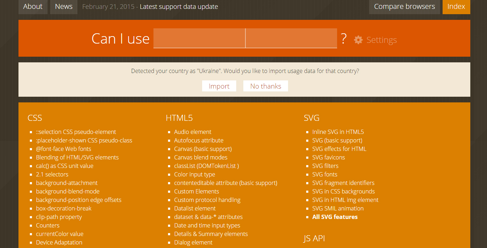

Cross-Browser
Internet Explorer
- IE 6 - 2001
- IE 7 - 2006
- IE 8 - 2009
- IE 9 - 2011
- IE 10 - 2012
- IE 11 - 2013
Spartan
legacy code
-
html > body E { foo: bar; } -
* html E { foo: bar; } -
* + html E { foo: bar; } -
E { foo: bar\9; }
Conditional Comments
-
<!--[if lt IE N]> {CONDITIONAL} <![endif]--> -
<!--[if lt IE 9]><link rel="stylesheet" href="style-oldie.css" /><![endif]--> -
<!--[if lt IE 9]><html class="lt-ie9"><![endif]--> -
.lt-ie9 E { foo: bar; }
Vendor prefixes
Vendor -pre-fixes
E {
-webkit-property: value;
-moz-property: value;
-ms-property: value;
-o-property: value;
property: value;
}
-
E { property: value; -o-property: value; -ms-property: value; -moz-property: value; -webkit-property: value; } -
E { -webkit-property: value; -moz-property: value; -ms-property: value; -o-property: value; property: value; }
caniuse.com
Autoprefixer
Graceful degradation
-
E { linear-gradient(to left, #600000, #c80000); } -
E { linear-gradient(to left, #600000, #c80000); } .lt-ie9 E { background-color: #920000; background-image: url(...); }
Progressive Enchancement
-
.element { background-color: #920000; } .element:hover { background-color: #c80000; } -
.element { background-color: #920000; transition: background-color linear .2s; } .element:hover { background-color: #c80000; }
Tools
-Prefix-free

Modernizr

Future is here!
@supports
-
@supports (width: 75vw) and (height: 50vh) { E { width: 75vw; height: 50vh; } } -
@supports not (font-size: calc(1rem + 8px)) { E { font-size: 16px; } E > F { font-size: 24px; } }